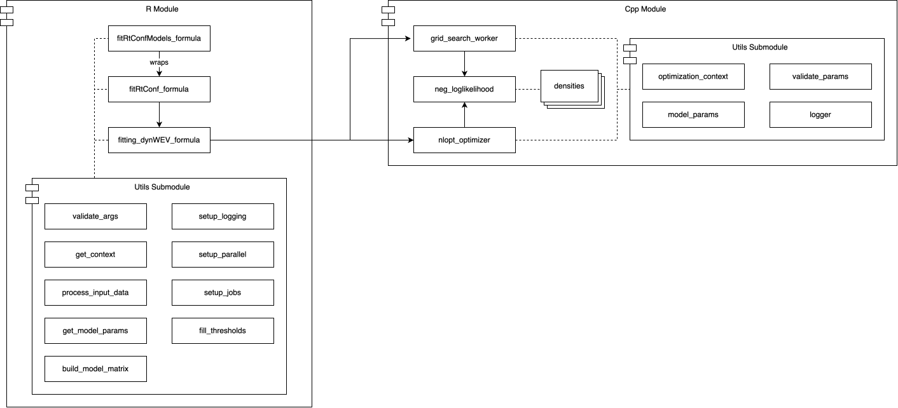

This package provides functions for fitting, predicting, and simulating data based on Sequential Sampling Models of Decision-Making and Confidence Judgments. It uses a formula-based interface to allow for easy specification of experimental manipulations (e.g., a ~ SAT).
This repository branch (integration) is a significant architectural rework of the original dynConfiR package, completed as part of an Interdisciplinary Project (IDP). It features a refactored Cpp backend and a more modular R-side architecture.
The package includes density functions for decision, confidence, and response time outcomes for several models, including: - Dynamic Visibility, Time, and Evidence model (dynaViTE) - Dynamic Weighted Evidence and Visibility (dynWEV) - Two-Stage Signal Detection (2DSD) - Independent and Partially-Correlated Race Models (IRM/PCRM)
(see Hellmann et al. 2023 for details, preprint available here)
Installation
This integration branch contains the development version of the package. You can install it using devtools:
devtools::install_github("SeHellmann/dynConfiRIDP", ref = "integration")For the latest stable version (from the main branch), you can install from CRAN:
install.packages("dynConfiR")Package Structure
This branch features a new architecture designed to be more modular, efficient, and maintainable. It separates the R-side user interface from the Cpp backend and isolates helper functions into distinct utility submodules.

R Module (the Orchestrator)
This module contains all R code and manages the user interface, data preparation, and optimization control.
-
Exported Functions:
fit_rtconf_models_formulais the main parallel wrapper for fitting multiple subjects or models. It callsfit_rtconf_formulafor each individual fit. -
Internal Fitting Logic:
fitting_dynwev_formulais the internal “main” function for a single fit. It orchestrates the process:- Sets up a parameter grid for the grid search.
- Calls the Cpp
grid_search_workerin parallel to find the best starting points. - Calls the Cpp
nlopt_optimizerin parallel for then_attemptsbest starting points. - Formats the final result.
-
R Utils Submodule: A set of helper scripts responsible for all R-side logic:
-
utils_validate_args.R: Provides user-friendly error messages by validating all function arguments before execution. -
utils_get_context.R: Creates thecontextobjects (one for R, one for Cpp) that pass state through the application. -
utils_process_input_data.R: Cleans, validates, and transforms the inputdata.frameinto thedependent_varsmatrix. -
utils_get_model_params.R: Sorts parameters into fixed, estimated, and manipulated categories and sets model-specific defaults. -
utils_build_model_matrix.R: Usesstats::model.matrixto build the predictor matrix and creates the index mappings for Cpp. -
utils_setup_jobs.R&utils_setup_parallel.R: Configure the future parallel backend (flat or nested) and prepare the list of all model-subject jobs. -
utils_fill_thresholds.R: A post-processing helper to fill in un-fittable confidence thresholds if a subject did not use all ratings.
-
Cpp Module (the Backend)
This module, written in Cpp with Rcpp, handles all high-performance computation. It is designed to be a “state-aware” backend that receives all necessary data from R in a single DTO.
-
Entry Points:
grid_search_workerandnlopt_optimizerare the two Rcpp exported functions called directly by R. They receive the DTO and manage the Cpp-side optimization process. -
Optimization Logic:
neg_loglikelihoodis the core objective function. It iterates over all trials, callingget_trial_paramsto get the parameters for that specific trial and summing the log-likelihood from thedensities. -
Cpp Utils Submodule:
-
optimization_context.hpp/.cpp: Defines theOptimizationContextclass, the main Data Transfer Object (DTO) from R. It holds all constant data (model matrix, dependent variables, parameter mappings) for the entire fit. -
ModelParameters: A Cpp struct defined inoptimization_context.hppthat holds the parameters for a single trial after transformations. -
logger.hpp: A utility that bridges Cpp logging calls back to the Rloggerpackage, allowing Cpp code to log to the same file as R with the same log layout. -
validate_params.h: A Cpp-side helper for validating parameter sets before they are used by the density functions.
-
-
Densities: The core
g_minus_WEVmudensity function (and others, e.g.,density_2DSD) are called byneg_loglikelihood. -
NLopt Integration: The Cpp optimizer uses the
nloptrR package to link to the C API headers for the NLopt library. This avoids needing to bundle the entire NLopt library with this package. (see a similar example here).
Collaboration
To improve the onboarding and development workflow for collaborators:
-
Continuous Integration: The package includes a GitHub Action workflow (
.github/workflows/R-CMD-check.yaml) that automatically runsR CMD checkon Windows, macOS, and Ubuntu for every push and pull request to the main and integration branches. This process now incorporates the initial setup for atestthatsuite, which runs a simple sanity check to verify that the package properly builds and links its Cpp backend. This enhances the CI by confirming the package is not only installable but also correctly compiled. -
IDE Setup: The
scripts/configure_clangd.Rscript generates a.clangdfile. This provides Cpp auto-completion, linting, and error-checking in IDEs, making Cpp development much easier.
Open Issues
This rework focused on building a robust, formula-based architecture for the dynaViTE/dynWEV/2DSD model family. The following items are key next steps:
-
Extend to Race Models: Integrate the existing Race Models (IRM/PCRM) density functions with the C++
OptimizationContextand update the R-sidefit_rtconf_formula_dispatcherto support them. -
Implement More Optimizers: The
nlopt_optimizer.cppfile only supports Nelder-Mead and bobyqa. This should be extended to support other optimization algorithms (e.g., L-BFGS-B). -
Optimize Grid Search: Refine the initial grid search strategy. The current implementation uses a simple random search (
rnorm) to find starting points. This could be improved by for example incorporating domain-specific parameter priors to cover the parameter space more efficiently. -
End-to-End Benchmarking: Enhance the
fit_rtconf_models_formulawrapper to systematically track and report the wall-clock time for each model-subject fit, providing a simple framework for performance profiling. -
Improve Nested Parallelism: Make the nested parallel plan (
n_cores = c(outer, inner)) more robust, particularly in handling error propagation, logging, and potential orphaned processes from inner workers. -
Refactor Density Interface: The
ModelParametersstruct currently uses the Adapter Pattern (via theto_density_vectormethod) to communicate with the legacy density functions. This interface should be refactored so the density functions can accept theModelParametersstruct directly. -
CI/CD Unit Tests: A minimal
testthatsuite has been added to verify the core build and Cpp linking. This initial setup should be expanded by adding more tests to validate all the different functionalities of the package (pre-processing, density functions, …).
References
Hellmann S, Zehetleitner M, Rausch M. Simultaneous modeling of choice, confidence, and response time in visual perception. Psychol Rev. 2023 Mar 13. doi: 10.1037/rev0000411. Epub ahead of print. PMID: 36913292.
Contact
For comments, remarks, and questions please contact me: sebastian.hellmann@ku.de or submit an issue.